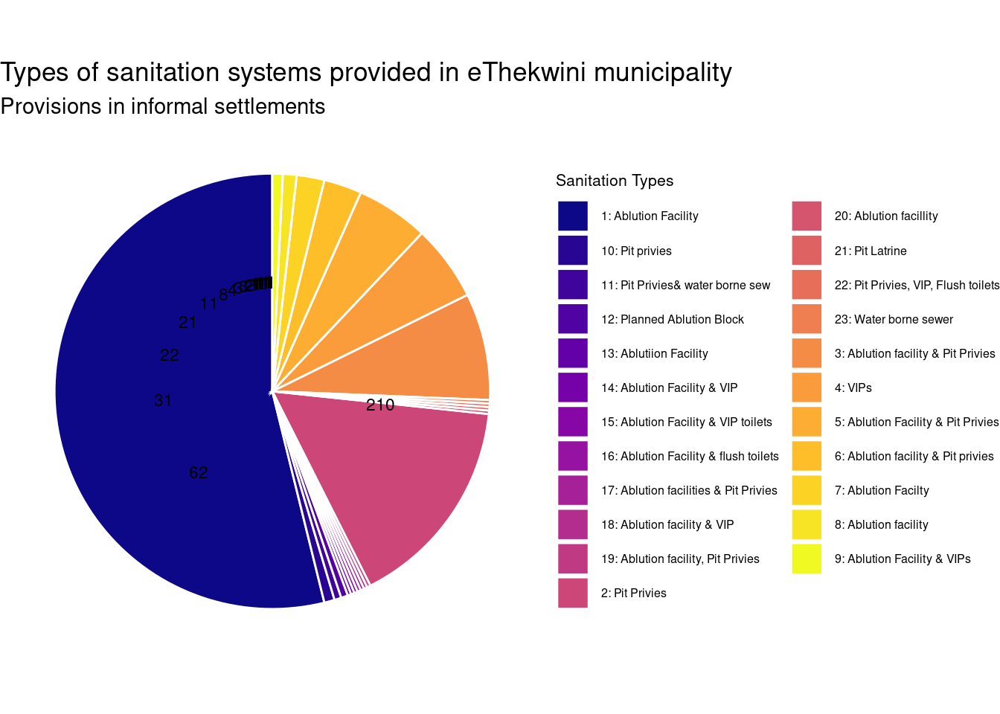
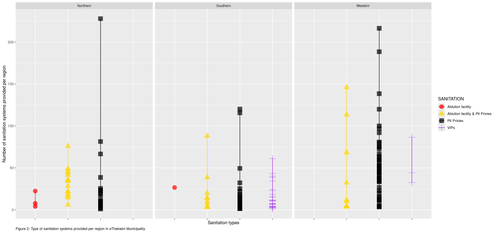

Show code
eis_data <- suppressMessages(read_csv (here::here("Data /raw/Durban_Informal_Settlement_Programme.csv"),show_col_types = FALSE), invisible(eis_data))Access to safe and adequate sanitation is a human right that is linked to human dignity, environmental protection, a conducive environemnt that positively impacts the livelihood of every human being in the world. As a results, it has been prioritised under Sustainable Development Goal 6 (SDG 6), which calls for equitable access to sanitation and hygiene for all by 2030. In South Africa, this has become a basic human right recognised through Section 24 of the constitution. However, rapid urbanisation and persistent socio-economic inequality have resulted in the continued growth of informal settlements, particularly in metropolitan municipalities such as eThekwini, where sanitation provision remains a critical service delivery challenge.
The municipaity of eThekwini recognised this challenge and was pressured by the need to address large sanitation backlogs in areas with high population density, informal housing, and difficult terrain. informal settlements were recognised and given communal ablution blocks (CABs) facilities, and on-site sanitation technologies such as ventilated improved pit (VIP) latrines (Flores, Buckley, and Fenner 2009). The CABs and VIPs were built temporarilly whilst improving sanitation structures in Durban that will abe able to accomoadate the now desely populated areas as a results of city migration (Bond et al. 2013; Bhagwan et al. 2008).
The National Upgrading Support Programme (NUSP) in eThekwini Municipality has increasingly aligned its mission in increasing sanitation for the informal settlement and previously disadvantahed communities. This is a tailored approach that will consider site specific environmental risks, climate resilience, and long-term service sustainability (Simiyu 2015). In line with SDG 6.2, municipal plans emphasise not only increased coverage, but also improving the quality of service delivery with more durable and safely managed sanitation systems.
The extension of basic sanitation services to previously unserved informal settlements has been shown to yield substantial improvements in health and living conditions. Empirical studies in South Africa demonstrate that access to sanitation significantly reduces exposure to faecal contamination, lowers the prevalence of diarrhoeal disease, and improves environmental hygiene in densely populated settlements (Graham & Polizzotto, 2013; Tumwebaze & Mosler, 2015). Beyond health outcomes, sanitation access contributes to improved quality of life and social wellbeing, particularly by enhancing safety, privacy, and dignity for women and children, who are disproportionately affected by inadequate sanitation (Sutherland et al. 2021).
The eThekwini municipality published its current status of sanitation provision within informal settlements in eThekwini in 2022. This is to be used through city planning in noting the types, distribution, and scale of sanitation services, and how future projects can be implemented in order to meet the objectives of SDG 6 in an urban informal settlement context.
Data for this study was obtained from the Informal Settlement Programme dataset accessed via the eThekwini Open GIS DATA. The eThekwini Open GIS Data platform is GIS database that focuses on the services provided at a municipal level that is open to the public. The dataset was provided in Microsoft Excel format. This data below contains asettlement-level information on the spatial distribution of informal settlements, estimated household counts, and access to basic services, including sanitation, within eThekwini Municipality. This data is to be used by the different municipality departments for future planning.
eis_data <- suppressMessages(read_csv (here::here("Data /raw/Durban_Informal_Settlement_Programme.csv"),show_col_types = FALSE), invisible(eis_data))eis<-read_csv (here::here("Data /raw/Durban_Informal_Settlement_Programme.csv") ,
show_col_types = FALSE)
#between chunk 2 and chunk 3, i am not sure which code is working and i am making a decision to keep them both.eis_raw<-read_csv (here::here("Data /raw/Durban_Informal_Settlement_Programme.csv"),
show_col_types = FALSE )sanitation_units<- eis |>mutate(San_units=Shape__Length/100)sanunitable<-sanitation_units |>relocate(San_units,.after=STREETNAME)
sanunitable<-sanunitable |>relocate(ALT_NAME,.after=LONGITUDE)
sanunitable<-sanunitable |>relocate(WARD_S,.after=LONGITUDE)
sanunitable<-sanunitable |>relocate(ALT_NAME,.after=LONGITUDE)
sanunitable<-sanunitable |>relocate(SANITATION,.after=STREETNAME)
sanunitable<-sanunitable |>relocate(WATER_SUPP,.after=PLANNING_U)
sanunitable<-sanunitable |>relocate(ELECTRIC_2,.after=WATER_SUPP)
sanunitable<-sanunitable |>relocate(REGION,.after=WATER_SUPP)
sanunitable<-sanunitable |>relocate(REFUSE,.after=ELECTRIC_2)
sansubset<-sanunitable[1:566,1:10] sansubset2<-sansubset|>filter(SANITATION!="TBC")
sansubset3<-sansubset2|>filter(WATER_SUPP!="TBC")
sansubset4<-sansubset3|>filter(ELECTRIC_2!="TBC")sansubset5<-sansubset4 %>% count(SANITATION)
sansubset5 %>%
gt() %>%
cols_label(
SANITATION = "Sanitation Type",
n = "Frequency" )sansubset5<-sansubset5 %>% mutate(SANITATION=case_when(SANITATION=="VIPs"~"VIP",SANITATION=="Ablution Facility"~"Ablution facility",SANITATION=="Ablution Facilty"~"Ablution facility",SANITATION=="Ablution facillity"~"Ablution facility",SANITATION=="Ablution Facility & VIP"~"Ablution facility & VIP",SANITATION=="Ablutiion Facility"~"Ablution facility",SANITATION=="Ablution Facility & VIPs"~"Ablution facility & VIP",SANITATION=="Ablution Facility & VIP toilets"~"Ablution facility & VIP",SANITATION=="Ablution facilities & Pit Privies"~"Ablution facility & Pit privies",SANITATION=="Ablution facility, Pit Privies"~"Ablution facility & Pit privies",.default = SANITATION))Below ?@tbl-sansubset5 shows the different sanitation provided in the different IS within eThekwini municipality. This data shows the number of sanitation technologies including Ablution facilities, commonly known as community ablution blocks (CAB), VIP latrines and those that are with more than a single sanitation system within the same IS. The table is further translated into a graph as seen on Figure 1.
#| label: tbl-sansubset5
#| tbl-cap: "Types of sanitation systems provided in eThekwini municipality"
sansubset5 <- sansubset4 |>
count(SANITATION)
sansubset5 |>
gt() |>
cols_label(
SANITATION = "Sanitation Type",
n = "Frequency"
) |>
tab_header(
title = "Table 1: Types of sanitation systems provided in eThekwini municipality",
subtitle = "Provisions in informal settlement" )| Table 1: Types of sanitation systems provided in eThekwini municipality | |
| Provisions in informal settlement | |
| Sanitation Type | Frequency |
|---|---|
| Ablutiion Facility | 1 |
| Ablution Facility | 210 |
| Ablution Facility & Pit Privies | 21 |
| Ablution Facility & VIP | 1 |
| Ablution Facility & VIP toilets | 1 |
| Ablution Facility & VIPs | 3 |
| Ablution Facility & flush toilets | 1 |
| Ablution Facilty | 8 |
| Ablution facilities & Pit Privies | 1 |
| Ablution facility | 4 |
| Ablution facility & Pit Privies | 31 |
| Ablution facility & Pit privies | 11 |
| Ablution facility & VIP | 1 |
| Ablution facility, Pit Privies | 1 |
| Ablution facillity | 1 |
| Pit Latrine | 1 |
| Pit Privies | 62 |
| Pit Privies& water borne sew | 2 |
| Pit Privies, VIP, Flush toilets | 1 |
| Pit privies | 3 |
| Planned Ablution Block | 2 |
| VIPs | 22 |
| Water borne sewer | 1 |
Figure 1 below is a display of the sanitation types provided ineThekwini municipality within the ISP.
library(ggplot2)
library(dplyr)
library(viridis)Loading required package: viridisLite# Sort by frequency descending and create numeric IDs + labels
sansubset5 <- sansubset5 %>%
arrange(desc(n)) %>%
mutate(
id = row_number(), # numeric x-axis
legend_label = paste0(id, ": ", SANITATION, " (", n, ")")
)
# Generate colours for all categories
num_categories <- nrow(sansubset5)
colors <- viridis(num_categories, option = "C")
# Plot horizontal bar chart with legend at bottom
ggplot(sansubset5, aes(x = id, y = n, fill = legend_label)) +
geom_col() +
geom_text(aes(label = n), hjust = -0.1, size = 2) + # numbers on bars
scale_fill_manual(values = colors, name = "Sanitation Types") +
scale_x_continuous(breaks = sansubset5$id) + # numeric x-axis
labs(
x = "Sanitation Type",
y = "Frequency",
title = "Types of sanitation systems provided in eThekwini municipality",
subtitle = "Provisions in informal settlements"
) +
coord_flip() + # horizontal bars
theme_minimal() +
theme(
legend.position = "bottom", # legend at bottom
legend.text = element_text(size = 5), # small legend font
legend.title = element_text(size = 5)
) +
labs(x = "Sanitation types",
y = "Frequency",
caption = paste0("Figure 1: Frequency of sanitation systems provided per region in eThekwini Municipality")) + theme(axis.text.x = element_blank(),plot.caption = element_text(hjust = 0)) 
sanitation_units %>%
filter(SANITATION %in% c("VIPs", "Ablution facility","Pit Privies","Ablution facility & Pit Privies")) %>%
ggplot(aes(x = SANITATION, y = San_units, colour = SANITATION, shape = SANITATION)) + geom_point(size=5,alpha=0.7) + facet_wrap(~REGION)+geom_line()+scale_colour_manual(values = c("red","gold","black","purple"))+
labs(x = "Sanitation types",
y = "Number of sanitation systems provided per region",
caption = paste0("Figure 2: Type of sanitation systems provided per region in eThekwini Municipality")) + theme(axis.text.x = element_blank(),plot.caption = element_text(hjust = 0))
The analysis reveals that VIP latrines which were deamed as cost effective and CABs dominate sanitation provision within eThekwini’s informal settlements, either individually or in combination. This substantiates that the municipality went from VIPs to CAB to be able to provide sanitation at a large scale rather than individual homes with VIPs. CABs offer improved hygiene through shared waterborne services, and are now most prevalent.
The regional variation observed indicates that sanitation coverage is uneven, influenced by settlement density, historical investment, and infrastructure backlogs. The coexistence of multiple sanitation types within single settlements underscores the transitional nature of service delivery, where temporary systems address immediate needs while long-term upgrades are planned.
Pit latrines are prevalent in the rural areas that are further than the CBD, the southern parts of the municipality. The Southern part has more VIPs, an improved version of the pit latrines. These findings emphasize the need for integrated planning that considers technical feasibility, social dynamics, and spatial distribution for future planning.
Sanitation provision in eThekwini’s informal settlements is dominated by VIP latrines and communal ablution facilities, with notable spatial variation. Future interventions should prioritize:
Upgrading temporary systems to permanent, safely managed sanitation.
Ensuring equitable distribution across underserved regions.
Improving maintenance and sustainability of communal facilities.